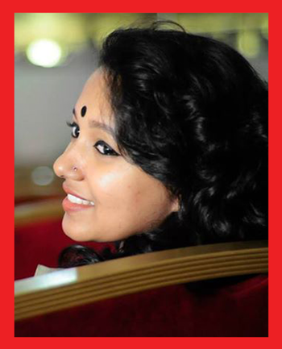

UMME HASINA JAHAN NIPU
SHOW : AALOR JATRA
I am a very simple, fun loving girl. I like to spend my time with my family and friends. Without my family I am meaningless.
Favourites
places : Cox’s bazar, Any place with my favourite people.
Songs : Ami sunechi sedin tumi & any song my ears love to hear.
Hobby : Photopraphy, Cooking.
Games : Lodu, Kutkut.
Artists : Bipasha Hayat, Meher Nigar Shawon, Salman Shah, Hrittik Rowshan, Rani Mukharji, Dipika Padukone.
Interests : I Love to sleep.
Idol : My mom. Also I think anyone can learn anything from anyone. I want learn from people and make myself better.
Foods : Traditional bangla food(Vaat-mach) and spicy foods.
Hated things
Showing off.
Philosophy of life
I always try to be honest with myself. I want to touch the stars. Want to enjoy every moment of my life. Living life with happiness and friends & family is my philosophy of life. I also think people should do something to live even after death.